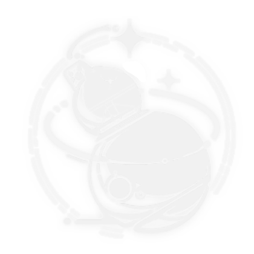

Department of Anomaly Studies
The Department of Anomaly Studies researches and analyzes abnormal occurrences, constructs theories based on these events, and devises preventative measures. This includes the Resonance Beacon network model and Wutherological Climate studies in Jinzhou.
Main Disciplines: Wutherology, Remnant Ecoacoustics